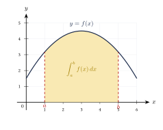
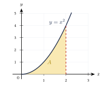
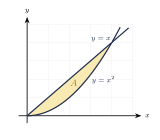

Capítulo 44
Integral definida y aplicaciones
UNAM IPN
La integral definida mide la acumulación neta de una cantidad en un intervalo.
Sus principales aplicaciones son:
- calcular áreas bajo una curva;
- calcular áreas entre curvas;
- obtener desplazamientos y distancias;
- calcular volúmenes de sólidos de revolución;
- calcular longitudes de arco.
44.1 Integral definida#
La integral definida de una función \(f\) entre \(a\) y \(b\) se escribe:
El número \(a\) es el límite inferior y \(b\) es el límite superior. El resultado de una integral definida es un número real.
Si:
en \([a,b]\), la integral representa el área bajo la curva:
sobre el eje \(x\) y entre las rectas:

44.2 Propiedades básicas#
Intervalo de longitud cero#
Cambio de orientación#
Separación del intervalo#
Si:
entonces:
Múltiplo constante#
Suma y resta#
Integral de una constante#
Se sabe que:
y:
Calcula:
Ver solución
Por linealidad:
Por tanto:
44.3 Teorema Fundamental del Cálculo#
Si \(F\) es una antiderivada de \(f\), entonces:
La notación:
significa:
Procedimiento#
- Encuentra una antiderivada \(F\).
- Evalúa: \[F(b).\]
- Evalúa: \[F(a).\]
- Calcula: \[F(b)-F(a).\]
En una integral definida no se escribe la constante \(C\), porque se cancela:
Calcula:
Ver solución
Una antiderivada de \(x^2\) es:
Evaluamos:
Por tanto:
Calcula:
Ver solución
Una antiderivada es:
Evaluamos:
Por tanto:
Calcula:
Ver solución
Escribimos:
Una antiderivada es:
Evaluamos:
Por tanto:
44.4 Integral neta y área geométrica#
La integral definida representa área con signo:
- las regiones sobre el eje \(x\) aportan valores positivos;
- las regiones debajo del eje \(x\) aportan valores negativos.
Por tanto, la integral definida representa una acumulación neta.
El área geométrica siempre es no negativa.
Si:
en \([a,b]\), entonces:
Si la función cambia de signo, debe separarse el intervalo en sus ceros y sumar las áreas positivas.
Equivalentemente:
Calcula el área entre:
el eje \(x\) y las rectas:
Ver solución
Como:
el área es:
Por tanto:
unidades cuadradas.

44.5 Área entre dos curvas#
Si:
en \([a,b]\), el área entre las curvas es:
En palabras:
Procedimiento#
- Encuentra los puntos de intersección.
- Identifica cuál función está arriba.
- Resta: \[\text{superior}-\text{inferior}.\]
- Integra entre los puntos de intersección.
- Expresa el resultado en unidades cuadradas.
Calcula el área entre:
y:
en:
Ver solución
En el intervalo \([0,1]\):
Por tanto, la función superior es:
y la inferior es:
El área es:
Integramos:
Por tanto:
unidades cuadradas.

Si las curvas cambian de posición dentro del intervalo, debe dividirse el área en varias integrales.
44.6 Aplicaciones al movimiento#
Si:
es la velocidad de un objeto, el desplazamiento entre \(t=a\) y \(t=b\) es:
La distancia total recorrida es:
El desplazamiento y la distancia total no siempre son iguales.
El desplazamiento considera el signo de la velocidad. La distancia total suma todas las distancias recorridas como cantidades positivas.
La velocidad de una partícula es:
Encuentra el desplazamiento entre:
Ver solución
Integramos:
Por tanto:
Para la velocidad:
determina cuándo cambia de dirección en \([0,4]\).
Ver solución
Factorizamos:
La velocidad es cero en:
Estos valores dividen el intervalo en:
Para calcular la distancia total, debe integrarse el valor absoluto o cambiar el signo de los intervalos donde la velocidad sea negativa.
44.7 Valor promedio de una función#
El valor promedio de una función continua en \([a,b]\) es:
Encuentra el valor promedio de:
en:
Ver solución
Por tanto:
44.8 Volúmenes de sólidos de revolución#
Cuando una región gira alrededor de una recta, genera un sólido de revolución.
44.8.1 Método del disco#
Si una región bajo:
gira alrededor del eje \(x\), el radio de cada disco es:
El volumen es:
En el caso más simple:
Encuentra el volumen generado al girar:
alrededor del eje \(x\) en:
Ver solución
El radio es:
Aplicamos la fórmula:
Por tanto:
unidades cúbicas.
44.8.2 Método de las arandelas#
Si existe un radio exterior \(R(x)\) y un radio interior \(r(x)\), el volumen es:
En el método de las arandelas se resta:
En las fórmulas de volumen aparecen unidades cúbicas, no unidades cuadradas.
44.9 Longitud de arco#
IPN
Si \(f'\) es continua en \([a,b]\), la longitud del arco de:
es:
Procedimiento#
- Calcula: \[f'(x).\]
- Eleva al cuadrado: \[[f'(x)]^2.\]
- Forma: \[\sqrt{1+[f'(x)]^2}.\]
- Integra entre \(a\) y \(b\).
IPN
Calcula la longitud de arco de:
entre:
Ver solución
Derivamos:
Aplicamos la fórmula:
Por tanto:
Este resultado coincide con la distancia entre:
y:
IPN
Calcula la longitud de arco de:
entre:
Ver solución
Derivamos:
Entonces:
Aplicamos la fórmula:
Integramos:
Por tanto:
44.10 Procedimiento rápido#
Integral definida#
- Encuentra una antiderivada \(F\).
- Evalúa: \[F(b)-F(a).\]
Área bajo una curva#
- Determina si la función es positiva o negativa.
- Integra en cada intervalo.
- Usa valores absolutos si se solicita área geométrica.
Área entre curvas#
- Encuentra las intersecciones.
- Identifica la curva superior.
- Integra: \[\text{superior}-\text{inferior}.\]
Movimiento#
- Para desplazamiento, integra \(v(t)\).
- Para distancia total, separa donde \(v(t)=0\).
- Suma las distancias como cantidades positivas.
Volumen#
- Identifica el eje de giro.
- Determina el radio exterior y, si existe, el interior.
- Eleva los radios al cuadrado.
- Integra y multiplica por \(\pi\).
44.11 Resumen#
Teorema Fundamental del Cálculo:
Área bajo una curva positiva:
Área entre curvas:
Desplazamiento:
Distancia total:
Valor promedio:
Volumen por discos:
Volumen por arandelas:
Longitud de arco:
44.12 Errores frecuentes#
Recuerda:
- En una integral definida se calcula: \[F(b)-F(a).\]
- No se agrega \(C\) en una integral definida.
- La integral representa acumulación neta.
- El área geométrica siempre es no negativa.
- Para calcular área entre curvas se resta: \[\text{superior}-\text{inferior}.\]
- Si las curvas cambian de posición, debe dividirse el intervalo.
- El desplazamiento puede ser negativo, pero la distancia total no.
- Para calcular distancia total deben localizarse los ceros de la velocidad.
- En el método del disco, el radio se eleva al cuadrado.
- En el método de las arandelas se resta el cuadrado del radio interior.
- Las áreas se expresan en unidades cuadradas.
- Los volúmenes se expresan en unidades cúbicas.
- En longitud de arco debe calcularse primero la derivada.
44.13 Ejercicios propuestos#
Calcula:
Ver solución
Calcula:
Ver solución
Calcula:
Ver solución
Calcula:
Ver solución
Calcula el área bajo:
entre:
Ver solución
Calcula el área entre:
y:
en:
Ver solución
En \([0,1]\), la función superior es \(y=x\) y la inferior es \(y=x^2\). \[A = \int_0^1 (x - x^2)\,dx = \left[\frac{x^2}{2} - \frac{x^3}{3}\right]_0^1 = \frac{1}{2} - \frac{1}{3} = \frac{1}{6}.\]
Calcula el área entre:
y el eje \(x\).
Ver solución
Intersecciones con el eje \(x\): \(4-x^2=0 \Rightarrow x=\pm 2\). La parábola está sobre el eje \(x\) en \([-2,2]\). \[A = \int_{-2}^2 (4 - x^2)\,dx = \left[4x - \frac{x^3}{3}\right]_{-2}^2 = \left(8 - \frac{8}{3}\right) - \left(-8 + \frac{8}{3}\right) = 16 - \frac{16}{3} = \frac{32}{3}.\]
La velocidad de un móvil es:
Encuentra el desplazamiento entre:
Ver solución
La velocidad de una partícula es:
Calcula el desplazamiento y la distancia total recorrida entre:
Ver solución
Desplazamiento: \[\int_0^5 (t-2)\,dt = \left[\frac{t^2}{2} - 2t\right]_0^5 = \frac{25}{2} - 10 = \frac{5}{2}.\] Distancia total: \(v(t)=0\) en \(t=2\). \[\int_0^2 (2-t)\,dt + \int_2^5 (t-2)\,dt = \left[2t - \frac{t^2}{2}\right]_0^2 + \left[\frac{t^2}{2} - 2t\right]_2^5 = (4 - 2) + \left(\frac{5}{2} - (-2)\right) = 2 + \frac{9}{2} = \frac{13}{2}.\]
Encuentra el valor promedio de:
en:
Ver solución
Encuentra el volumen generado al girar:
alrededor del eje \(x\) en:
Ver solución
Por el método de los discos: \[V = \pi \int_0^2 (x^2)^2\,dx = \pi \int_0^2 x^4\,dx = \pi \left[\frac{x^5}{5}\right]_0^2 = \frac{32\pi}{5}.\]
Encuentra el volumen generado al girar la región entre:
y:
alrededor del eje \(x\) en:
Ver solución
Por el método de las arandelas: \[V = \pi \int_0^2 \left(2^2 - x^2\right)\,dx = \pi \left[4x - \frac{x^3}{3}\right]_0^2 = \pi\left(8 - \frac{8}{3}\right) = \frac{16\pi}{3}.\]
IPN
Calcula la longitud de arco de:
entre:
Ver solución
\(y=x \Rightarrow y'=1\). \[L = \int_1^5 \sqrt{1 + (1)^2}\,dx = \int_1^5 \sqrt{2}\,dx = \sqrt{2}\left[x\right]_1^5 = 4\sqrt{2}.\]
IPN
Calcula la longitud de arco de:
entre:
Ver solución
\(y=\frac{2}{3}x^{3/2} \Rightarrow y'=x^{1/2}\). \[L = \int_0^3 \sqrt{1 + (x^{1/2})^2}\,dx = \int_0^3 \sqrt{1+x}\,dx = \left[\frac{2}{3}(1+x)^{3/2}\right]_0^3 = \frac{2}{3}(4^{3/2} - 1^{3/2}) = \frac{2}{3}(8 - 1) = \frac{14}{3}.\]
Calcula el área bajo:
entre: